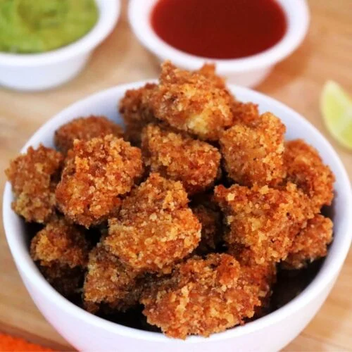

Peri Peri Chicken Popcorn

Description
Bite Size , Tasty and Crunchy who dosen't Love Chicken Popcorn.(Except Vegans 😜LOL)
I usually make these when i'm Hungry in the Evening. High in Protein and Tasty!!
INGREDIENTS (1 Serving)
- Boneless Skinless Chicken Breasts 150-200 gm
- Buttermilk 200 ml
- 150- 200 ml Cooking Oil
- 2 tbspn Salt and Pepper each
- 2 tbspn Red chilli Powder
- 2 tbspn Garlic Powder
- 2 Cups All Purpose Flour
- Peri Peri Spice Mix
PREPARATION
- Cut your Chicken Breasts into Bite sized Pieces.
- Pour 200ml of Buttermilk in a bowl. Add 1 tbspn of Salt, Pepper, Red Chilli Powder, Garlic Powder.
- Marinate you chicken pieces in the buttermilk Mixture for atleast an Hour.(Best Left Overnight)
RECIPE
- Take two cups of all Purpose Flour in Bowl. Add 1 tbspn of Salt, Pepper, Red chilli Powder in the flour.
- Mix Thorougly
- Take the Chicken pieces from the Marinade and cover them in Flour from All sides.(Tip: Pressing hard makes the coating Stick)
- Shake off the excess Flour. Deep Fry the Chicken pieces until Golden Brown.(Around 5-6 minutes on a Medium-High Flame)
- Sprinkle Some Peri Peri Spice mix while the Chicken is HOT and SERVE
Return to LogBook